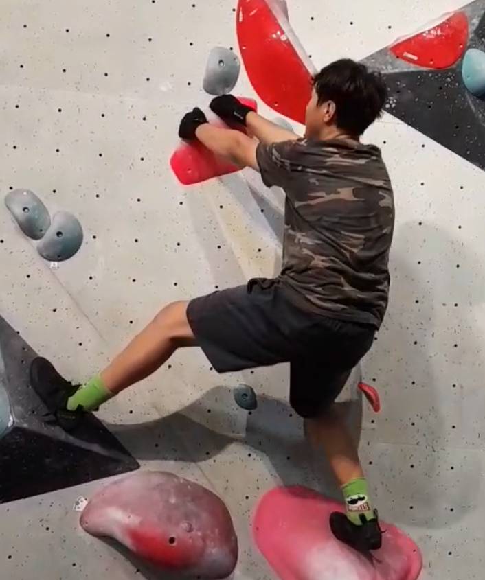

Courtesy
When Bouldering, there are common courtesies that you should keep in mind when interacting with other Boulderers
- Overlapping
- When embarking on a climb, make sure that it dosen't overlap with a climb that another person is doing, as it can lead to collision and injury.
- Chalk
- When taking community chalk, always make sure to put it down where you got it, so that other people can easily locate it.
- Crash Pads
- Make sure to keep the crash pads clear of personal items and rubbish, and don't sit on them either.

Safety
- Falling
- If you fall down, try to land legs first, and roll to cusion the impact.
- Climbing Tape
- Climbing tape is often provided at venues, use it if you have cuts or abrasions on your hands that need trating
- Water
- Hydration is important, and can lead to headaches and fatigue if you don't drink.